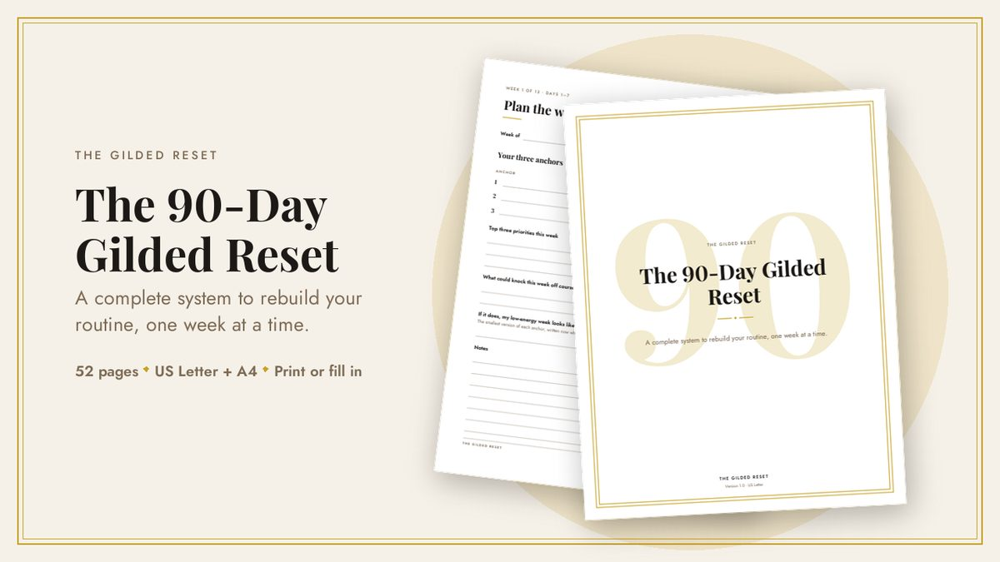
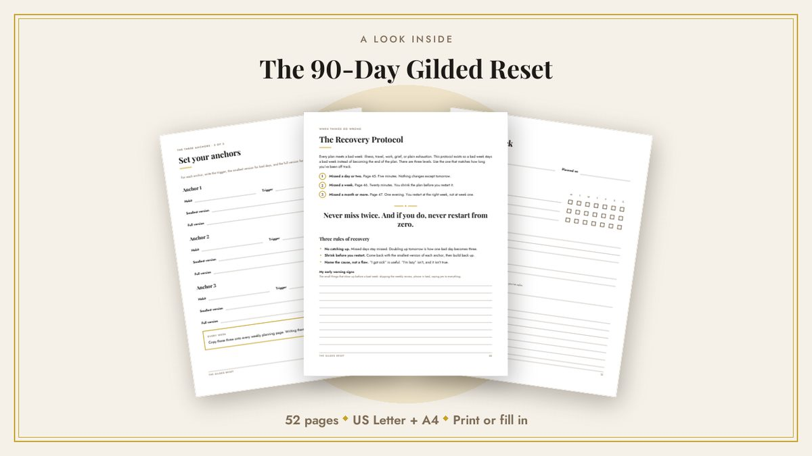
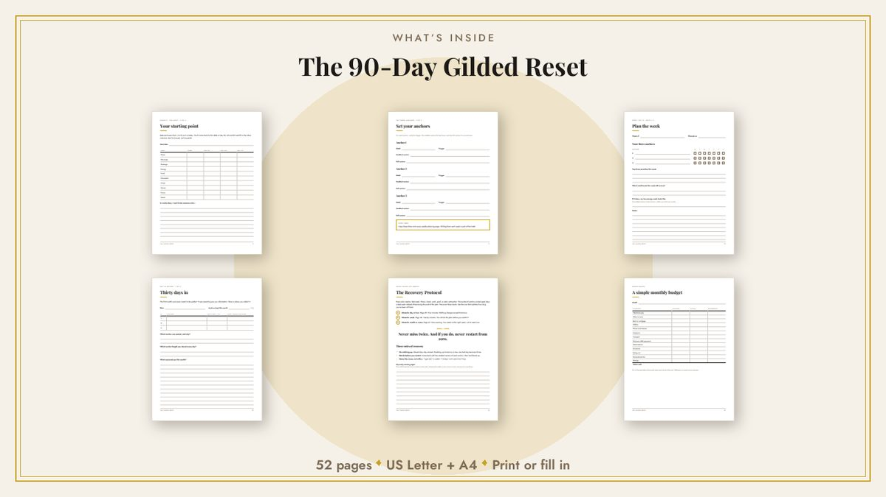

The 90-Day Gilded Reset
From chaos to a routine that sticks.
A ninety-day system for people who have started over more than once. 52 pages, thirteen weeks, one clear path, and a plan for the weeks that go wrong.
Instant download · US Letter and A4 · Print it or fill it in on your device · 14-day refund

You don’t need another planner.
You have bought one before. You filled it in beautifully for nine days. Then one bad week arrived, and the planner turned into a reminder of the week you failed, so you stopped opening it.
The problem was never your discipline. It was that the planner assumed a perfect life: no flu, no deadline week, no month where everything slid at once.
This one assumes the opposite. It is built for the weeks that go wrong, because those are the weeks that decide whether anything lasts.
What’s inside
Start here, in seven steps
So you know exactly what to print and what to do first. Most printables hand you files and wish you luck.
Phase 0: the audit
Four pages that show where your time actually goes, what breaks first when you get busy, and where you are starting from.
Three anchors, not ten
Three habits chosen so that keeping them makes everything else easier, each with a trigger and a two-minute version for bad days.
Thirteen weekly spreads
A planning page and a review page for every week. Undated, so you can start on any day of the year.
Reviews at day 30, 60 and 90
Different questions at each stage, because month two fails for different reasons than month one.
The Recovery Protocol
Four pages for the day, the week and the month that go wrong. It starts on page 44.
Money basics
A simple monthly budget, a bill tracker and a two-minute weekly check-in, because money stress leaks into everything else.
A look inside


Why this one works
It ends.
Ninety days, with a finish line. Not an open-ended planner you abandon in March and feel bad about in June.
It tells you where to start.
Seven steps on page 3, and a contents page that links straight to the section you need.
It plans for failure.
Page 44 is about exactly that, and every weekly review asks where the week broke instead of pretending it didn’t.
The details
- Format
- PDF, instant download. Nothing ships.
- Sizes
- US Letter and A4, both included
- Pages
- 52
- Fillable
- Yes. Type into it in any PDF reader, or print it and write.
- Dates
- Undated. Days are numbered, so you can start whenever you like.
- License
- Personal use. Print it as often as you like for yourself.
- Updates
- Free for life. New versions arrive by email.
Questions
I have failed at planners before. Why would this be different?
Is this a physical planner?
Which paper size do I need?
Do I have to start in January, or on a Monday?
How much time does it take each week?
Can I share it with a friend?
What if it isn’t right for me?
Ninety days from today is coming either way.
Start it with a plan for the weeks that go wrong.
14-day refund, no questions asked.